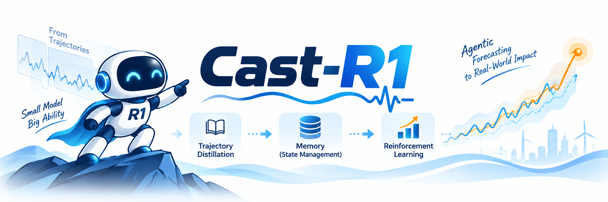
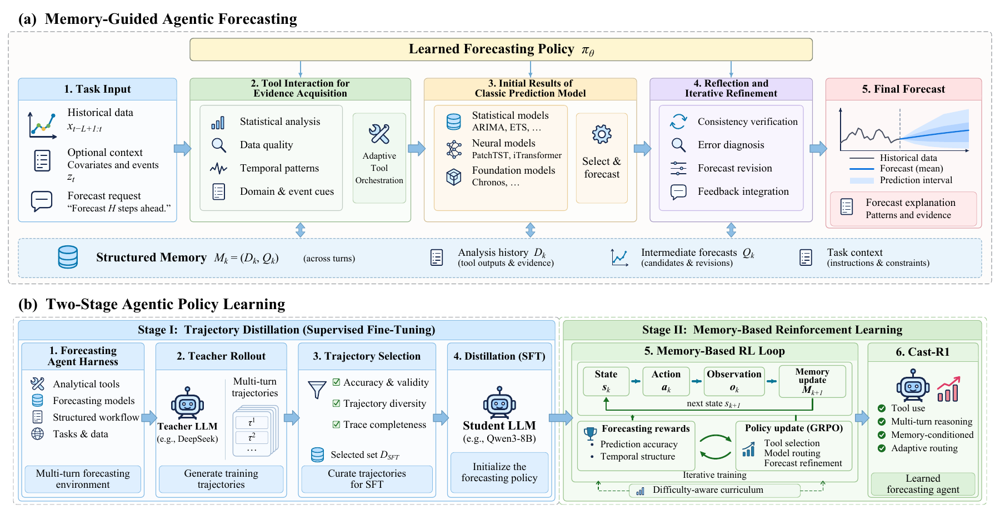
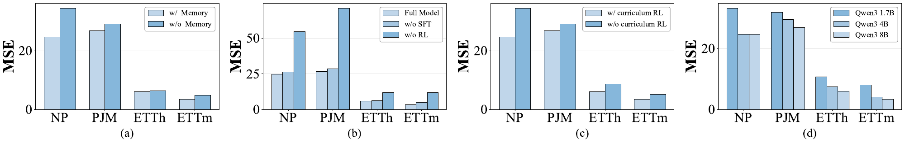

Acquire evidence
Inspect data quality, statistical properties, temporal structure, events, and residuals.
An 8B language model that learns to analyze time series, choose forecasting tools, and refine predictions using accumulated evidence.
Explore a forecasting episode
What should we inspect? Which forecaster fits the evidence? How should its prediction be revised?
Cast-R1 learns these decisions through forecasting-specific post-training. A single policy coordinates diagnostic tools, routes among forecasting models, and revises their outputs within a structured workflow.
Inspect data quality, statistical properties, temporal structure, events, and residuals.
Route to ARIMA, Chronos, PatchTST, or iTransformer using diagnostic evidence.
Combine recent observations and stored evidence to revise the intermediate forecast.
One ETTh1 episode. From historical evidence to a revised 96-step prediction.
Statistical and temporal diagnostics characterize recurring fluctuations in the 96-hour history. Their summaries are retained in Analysis History for later decisions.
Replay adapted from the paper’s qualitative case. Curves are extracted from the original vector figure; summaries describe its stages. Future targets appear only in the final comparison. View original figure ↗
Two training stages turn a Qwen3-8B backbone into a memory-conditioned forecasting policy.
A DeepSeek-V3.2 teacher interacts with the forecasting harness. Complete, valid trajectories are ranked by forecast error within each dataset.
The distilled policy learns from terminal rewards for accuracy, temporal structure, and output completeness, with a difficulty-aware curriculum.
Analysis History retains diagnostic outputs. Prediction Results retains intermediate forecasts. Each new policy state is constructed from these two components and the task inputs.

Memory-guided forecasting (a) and two-stage policy learning (b). Select the figure to open its PDF.
Evaluated against 15 baselines across long-term forecasting and electricity price forecasting.
vs. the best baseline on each dataset
Long-term forecasting
Electricity prices
Arithmetic mean of per-dataset relative reductions, including the negative result on PJM.
Reported point estimates from the revised manuscript. A single agent is trained across all ten datasets. Errors use the raw data scale; the two benchmark families have different supported input regimes.
Bold = best. Underlined = second best. The selected metric and benchmark family also apply to this table.
The reported ablations favor combining trajectory distillation and RL. Removing memory also increases MSE on the four displayed benchmarks.
Read the ablation analysis
The implementation includes the shared forecasting harness, trajectory selection, SFT, multi-turn GRPO, and evaluation.
Python 3.11. Full policy training and serving require a compatible CUDA environment.
For the public arXiv preprint, use its published title and author list. The revised manuscript linked above has updated metadata.
arXiv:2602.13802@article{tao2026cast,
title = {Cast-R1: Learning Tool-Augmented Sequential
Decision Policies for Time Series Forecasting},
author = {Tao, Xiaoyu and Cheng, Mingyue and Jiang, Chuang
and Gao, Tian and Zhang, Huanjian and Liu, Yaguo},
journal = {arXiv preprint arXiv:2602.13802},
year = {2026},
doi = {10.48550/arXiv.2602.13802},
url = {https://arxiv.org/abs/2602.13802}
}